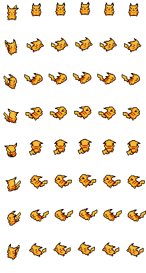
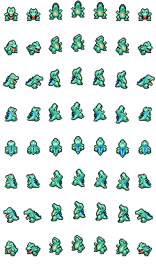
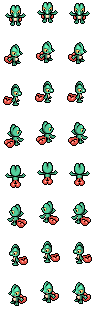
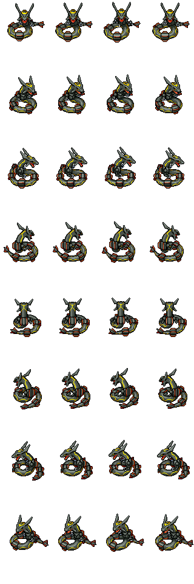
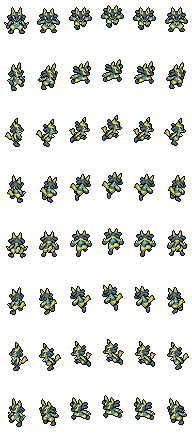
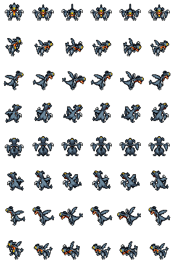
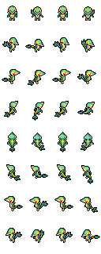
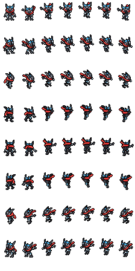

异色宝可梦：概率与获得方法
异色宝可梦具有不同的配色，十分罕见。本作大多数宝可梦拥有异色版本。
怎样获得
- 野生宝可梦出现时，有 1/4096 的概率为异色。发现后会有闪光与提示，击败即可获得。
- 地区抽取每次有 1/100 的概率获得异色。
- 重复的异色宝可梦会转换为三倍金币。
- 拥有伙伴的异色版本后，可在主菜单或图鉴中选择使用。
普通与异色版本对照

 妙蛙种子
妙蛙种子
 小火龙
小火龙
 杰尼龟
杰尼龟

皮卡丘
 伊布
伊布
 喷火龙
喷火龙
 超梦
超梦
 梦幻
梦幻
 菊草叶
菊草叶
 火球鼠
火球鼠

小锯鳄
 洛奇亚
洛奇亚
 凤王
凤王

木守宫
 火稚鸡
火稚鸡
 水跃鱼
水跃鱼

烈空坐
 波加曼
波加曼

路卡利欧

烈咬陆鲨

藤藤蛇

甲贺忍蛙
 木木枭
木木枭
 新叶喵
新叶喵